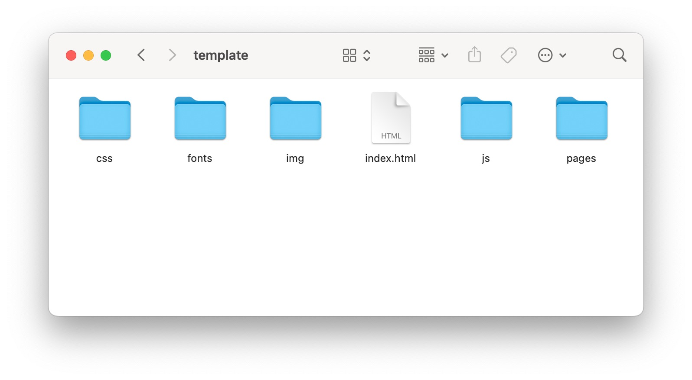
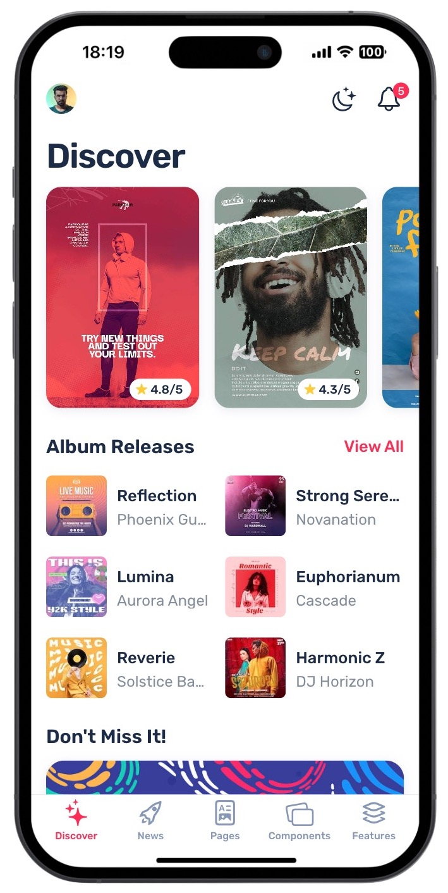
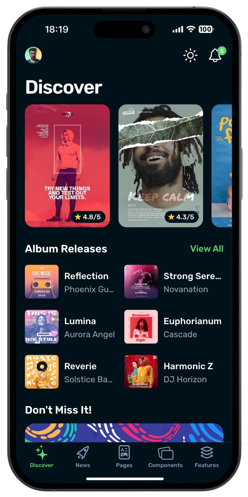
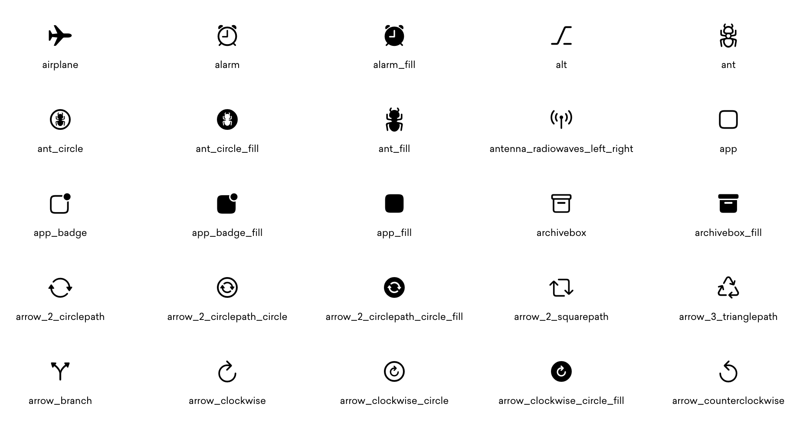

Getting started
Thank you for purchasing Yui on ThemeForest! The documentation will help you to understand and set up the template.
Requirements & Environment
Since Yui uses AJAX to manage transitions between pages, you need to put the template on a web server to make it work properly.
It can be :
- On a local web server, like WAMP on Windows, or MAMP on macOS
- On a web hosting, as for a standard website
- On a Cordova app, which acts as a web server
Once you have put one the template on a web server, you can open it in your browser and start working on it.
To simulate the result on a mobile device, I advise you to use the emulation Mode available on most browsers. You can also use an extension like Mobile Simulator on Chrome.
Or you can simply resize your browser window to the dimensions of a mobile device.
Don't forget to clear your cache after editing files, or the browser may not recognize the changes. I advise you to disable it completely if you are in a development environment.
Now you are ready to edit the template!
The files
The template include all these files:

HTML
index.html
is the main file. All the structure (tabs etc.) and the content you see when you open the template can be
found here.
CSS
The
css
folder contains 3 CSS files.
framework7-bundle.css
is the Framework7 style file, you do not need to modify it.
framework7-bundle-rtl.css
is the Framework7 style file for the layout of RTL languages (such as Arabic or Hebrew). If you don't need
RTL layout, you can remove this file. If you need RTL layout, please refer to the RTL
Layout section.
framework7-icons.css
is the Framework7 icons style file, you do not need to modify it.
style.css
is the app CSS file. You can do your style modifications here. It contains all of the specific stylings for
the template. The file is separated into sections using :
/* 1. Fonts */
/* some code */
/* 2. Root Variables */
/* some code */
/* 3. General */
/* some code */
/* 4. Navbar */
/* some code */
/* etc. */
If you want to edit a specific section of the app, simply find the appropriate label in the CSS file, and
then scroll down until you find the appropriate style that needs to be edited. Note that the
style.css
file contains a
[Table of contents]
at the top.
JS
The js folder contains two JavaScript files.
framework7-bundle.js
is the Framework7 library. The template uses
Framework7 V8
, a mobile library that manages router & transitions. You don't have to modify this file.
app.js
is the app script. It contains the app configuration and all the functions needed for certain features (like
infinite scroll, pull-to-refresh etc.) and each function is commented so that you understand what it is
about.
If you want to add your own custom features, you can do it in this file using native JavaScript or the Framwork7 library .
Fonts
The fonts folder contains 2 different fonts.
Framework7Icons
is the Framework7 icons font. You can find a list of all available icons
here
.
Rubik
is a font that comes from Google Fonts. You can find it
here
Images
The
images
folder contains all the placeholder images displayed throughout the application. They are separated into
subfolders so you can easily understand which images are used where.
Each placeholder image has a specific resolution, I advice you to use this resolution for the best performance (high quality on retina devices) and optimization (not unnecessarily oversized).
Pages
The
pages
folder contains all the additional pages. A page contains the content that is displayed when you click on a
link within the app and it transitions to another page.
How it works
This section will help you understand the structure of the template.
The template has several tabs, each tab is a view with its own navigation and history. This means you can open several pages and go back independently on each tab, without changing the content of the other tabs, just like native mobile navigation.
The content of all the tabs is in the
index.html
file. And every additional page is located in the
pages
folder.
The Tab Bar (at the bottom) is common for the entire app.
The Nav Bar (at the top) is unique for each page, which means you can have a different title and additional action icons for every page. The transitions of the pages and navbars are handled automatically by the template.
Understand the layout
Below, the structure of
index.html
The
<body>
tag can have a class to apply the color of the desired theme. (See
how to change the theme color
). By default, it's the blue theme.
The
<div id="app">
is the app wrapper.
The
<div class="panel">
contains the app left panel.
The
<div class="views tabs">
contains our differents views (tabs) and the tab bar. Inside this div, you can add other views (tabs) or
delete or edit the current ones.
Each view must have a unique id. The main view (the one that is displayed when you open the app) must have the additional view-main and tab-active classes.
Inside each view, you have a
<div class="page">
, and inside each page, you have the
<div class="navbar">
that contains the navbar for the specific page, and the
<div class="page-content">
that contains the HTML content of the page. You can copy and paste different elements and features from the
template here, or create your own content.
Concerning the tab bar at the bottom, each tab is a link having as href the id of the corresponding view. Inside each link is the text and icon displayed in the tab bar (See how to change the icons ).
Here is a clearer and simpler view of the structure of
index.html
:
<html>
<head>
<!-- ... -->
</head>
<body class="color-blue">
<div id="app">
<div class="panel"><!-- Panel Content --></div>
<div class="views tabs">
<!-- Tab 1 -->
<div class="view view-init view-main tab tab-active" id="tab-1">
<div class="page">
<div class="navbar"><!-- Navbar content --></div>
<div class="page-content"><!-- Page content --></div>
</div>
</div>
<!-- Tab 2 -->
<div class="view view-init tab" id="tab-2">
<div class="page">
<div class="navbar"><!-- Navbar content --></div>
<div class="page-content"><!-- Page content --></div>
</div>
</div>
<!-- Tab 3 -->
<div class="view view-init tab" id="tab-3">
<div class="page">
<div class="navbar"><!-- Navbar content --></div>
<div class="page-content"><!-- Page content --></div>
</div>
</div>
<!-- Tab 4 -->
<div class="view view-init tab" id="tab-4">
<div class="page">
<div class="navbar"><!-- Navbar content --></div>
<div class="page-content"><!-- Page content --></div>
</div>
</div>
<!-- Tab 5 -->
<div class="view view-init tab" id="tab-5">
<div class="page">
<div class="navbar"><!-- Navbar content --></div>
<div class="page-content"><!-- Page content --></div>
</div>
</div>
<!-- Tab Bar -->
<div class="toolbar tabbar tabbar-icons toolbar-bottom">
<div class="toolbar-inner">
<a href="#tab-1" class="tab-link tab-link-active">
<i class="icon f7-icons">sparkles</i>
<span class="tabbar-label">Discover</span>
</a>
<a href="#tab-2" class="tab-link">
<i class="icon f7-icons">rocket</i>
<span class="tabbar-label">News</span>
</a>
<a href="#tab-3" class="tab-link">
<i class="icon f7-icons">doc_richtext</i>
<span class="tabbar-label">Pages</span>
</a>
<a href="#tab-4" class="tab-link">
<i class="icon f7-icons">rectangle_on_rectangle_angled</i>
<span class="tabbar-label">Components</span>
</a>
<a href="#tab-5" class="tab-link">
<i class="icon f7-icons">layers_alt</i>
<span class="tabbar-label">Features</span>
</a>
</div>
</div>
</div>
</div>
</body>
</html>Links & Pages
To navigate between pages, you just need to use the standard link tag
<a href="/single/" class="link">My link</a>
Where
href
is the path of the page in the routes array in
app.js
.
To return to the previous page, you have to add the
back
class to the link
<a href="#" class="link back">Back link</a>
If you want to open an external link (outisde the app), you have to add the
external
class to the link
<a href="https://www.google.com" class="link external">My page</a>There is an exception for links that are inside the slides of a slider. In this case, the path should be added in the data-href attribute.
<a href="#" data-href="/single/" class="card">My page</a>Add additional pages
If you need to add custom additional pages, you can do it easily.
First, create a new HTML file with this structure :
<div class="page">
<div class="navbar">
<div class="navbar-bg"></div>
<div class="navbar-inner">
<div class="left">
<a href="#t" class="link back">
<i class="icon f7-icons arrow-back">arrow_left</i>
</a>
</div>
<div class="title">Page Title</div>
</div>
</div>
<div class="page-content">
<!-- Page content -->
</div>
</div>And save it in the pages folder.
When you click on a link, the app load the page in Ajax and parse the file to get only the div who has the
page
class. This is why there is no need to include the whole HTML header.
Next, you have to add a new route for the page in
app.js
. Go to the routes section, and add one for your page :
routes: [
{
path: '/action-sheet/',
url: 'pages/features/action-sheet.html',
},
// all the routes ...
{
path: '/my-page/',
url: 'pages/my-page.html',
}
]Then, if you want to open your page, you just have to create a link with the correct path, in our example :
<a href="/my-page/" class="link">My page</a>
You can now put anything you want inside the
page-content
div of your page, whether it is custom content, or any component that is included with the template.
Pages, Components & Features
Yui Mobile comes with a lot of pre-designed pages, features, and components that you can easily incorporate into your app by simply copying and pasting them.
Most elements are static, or dynamic but with auto-initialization (for exemple the sliders), which means you can copy/paste and edit them as you want without having to write a single line of Javascript. They will work as-in.
Pages
If you need to use one of the pre-build pages in your app, find the corresponding path of the page in the
routes array of
app.js
, and put this path in the href attribute of any link in your app. If you need to edit the page, find the
appropriate html file in the
pages/pages/
folder, and edit the content as you wish.
If you want to display the content of a pre-build page directly in one of the tabs, simply copy the content
that is inside the
<div class="page-content">
of the page, and paste it inside the
<div class="page-content">
of the tab you want in the
index.html
file.
Exceptions: The Onboarding, Chat, and Calendar pages require some JavaScript to function properly. Depending
on your requirements, you may need to modify the code. You can locate it in the
app.js
file. Please refer to the [Table of contents] at the top of the file to find the relevant section.
Components
You can copy any of the pre-build components and paste them anywhere you want in your app. They can be placed directly within the tabs or in one of your custom pages.
All the components have been coded at a single level, which means you don't have to struggle to determine
where to paste them, they all go in the same div: in the
<div class="page-content">
of the page.
You can find the code of any component in its own page in the pages/components/ folder
Exceptions: The Picker, Preloader, and Range slider components require some JavaScript to function
correctly. Depending on your requirements, you may need to modify the code. You can locate it in the
app.js
file. Please refer to the [Table of contents] at the top of the file to find the relevant section.
Features
Same as the components, most of the features will work as-in and you just need to copy/paste them anywhere you want if you want to use them.
The exceptions for which some Javascript code must be modified to suit your needs are: Dialog, Infinite
Scroll, Notification, Photo Browser, Pull To Refresh and Toasts. Again, refer to the [Table of content] at
the top of the app.js file to find the appropriate section. In most cases, the modifications
you will need to make will be fairly straightforward, such as making minor text edits to a toast, for
instance.
Quick Customization
This section will show you some tips to customize the template easily and quickly.
Color Themes
If you want, you can change the theme color of the app. This will change the color of the tab bar, links, buttons etc.
You just have to change the class color of the
body
tag in
index.html
<body class="color-blue">by the color of your choice among the 15 possible colours.
| Name | Color | Hex code |
|---|---|---|
| red | #ff3b30 |
|
| green | #4cd964 |
|
| blue | #2196f3 |
|
| pink | #ff2d55 |
|
| yellow | #ffcc00 |
|
| orange | #ff9500 |
|
| purple | #9c27b0 |
|
| deeppurple | #673ab7 |
|
| lightblue | #5ac8fa |
|
| teal | #009688 |
|
| lime | #cddc39 |
|
| deeporange | #ff6b22 |
|
| gray | #8e8e93 |
|
| white | #ffffff |
|
| black | #000000 |
For example, if you want the Red theme, replace the default
color-blue
by
color-red
.

Dark Mode
To set up the Dark Mode, just add the
dark
class on the
body
tag in
index.html
<body class="dark">You can also combine the Dark Mode with a color theme, for example Dark Mode + Green Theme
<body class="dark color-green">
Icons
Yui comes with Framework7 Icons , a beautiful icons font with a lot of original iOS icons.

An icon has this code :
<i class="icon f7-icons">icon_name</i>
So to replace an icon (for example in the Tab Bar), or add a new one, go
here
to see the icon list, get the name of the icon of your choice, and then just put the icon name inside the
<i>
tag.
For example if you want a star :
<i class="f7-icons">star</i>
.
RTL Layout
If your target audience includes Right-To-Left language readers, it's essential to adapt your app's layout accordingly. This section will show you how to quickly and easily implement an RTL (Right-To-Left) layout to ensure an optimal user experience for languages like Arabic or Hebrew.
First, open the index.html file and at the top of the document, add a dir="rtl"
attribute to the html tag,
like below:
<html dir="rtl">Then, in the head section of index.html, replace:
<link rel="stylesheet" href="css/framework7-bundle.css">by:
<link rel="stylesheet" href="css/framework7-bundle-rtl.css">And that's it, the template will now use a Right-To-Left layout.
Fetch Data
In certain cases, you might need to retrieve data from an external API and integrate it into your app. Below are some simple examples to demonstrate how to accomplish this. Keep in mind that in real-world projects, you may need to handle section hiding and display a preloader during the API call.
On app opening
If you want to fetch data when the application starts, you can achieve this by writing traditional
JavaScript code at the bottom of the app.js file. This code will execute immediately after the
app initialization.
// Let's call our API using the fetch function
fetch("https://jsonplaceholder.typicode.com/posts/1")
.then((response) => response.json())
.then((json) => {
// When the response is received, we can use Framework7 functions to add our data to the DOM
// You can also use vanilla Javascript if you prefer
$$('#card-id h2').text(json.title);
$$('#card-id .card-category').text(json.body);
})
.catch((error) => {
console.log(error)
});On a specific page
If you need to fetch data (or execute any code) when a specific page is opened — for example the single
page — you first have to add a unique name to that page. Let's add a data-name attribute at the top of
pages/pages/single.html:
<div class="page" data-name="single">Then, to execute some code (in our case an API call) when the user opens this page, you can use the page:init event like the exemple below:
// We use the page:init event to trigger our function when a new page is opened
// We use '.page[data-name="single"]' parameter to target the specific page
$$(document).on("page:init", '.page[data-name="single"]', function (page) {
// We can call our API using fetch function
fetch("https://jsonplaceholder.typicode.com/posts/1")
.then((response) => response.json())
.then((json) => {
// We can finally add our data to the page
$$('.single-post-title').text(json.title);
$$('.single-post-content').html(json.body);
})
.catch((error) => {
console.log(error)
});
});Use cases
Now that you have set up and customized your app, here are some examples of what you can do with it.
Mobile website
You can use this template as a mobile-friendly version of your website. For example, create a subdomain of your website where you host your mobile app, like mobile.yourblog.com .
And then redirect all mobile traffic to that subdomain.
PWA
You can also use the template as a Progressive Web App (PWA). Yui is PWA ready and even optimized for it.
Note that this section is just a quick introduction to PWAs. So if you want to create a complete PWA (with service workers etc.) I suggest you to follow a complete tutorial.
1. Create the manifest.json
First, create a new
manifest.json
file and add this content:
{
"short_name": "Yui",
"name": "Yui",
"icons": [
{
"src": "img/icon_192.png",
"type": "image/png",
"sizes": "192x192"
},
{
"src": "img/icon_512.png",
"type": "image/png",
"sizes": "512x512"
}
],
"start_url": "index.html",
"background_color": "#ffffff",
"display": "standalone",
"theme_color": "#ffffff"
}
You can change the
short_name
and
name
values by the name of your app. Note that
short_name
is the name that will be displayed on the user's home screen.
If you use Dark Theme, you can replace the background_color and theme_color values by
#001119
.
Now save the file in the template folder.
(You can find all the documentation about manifest.json here )
2. Link the manifest.json to the index.html
In
index.html
, in the
<head>
section, add this code:
<link rel="manifest" href="manifest.json">3. Create the icons
You need to create 3 icons, 2 for Chrome, and one for iOS.
-
A
icon_180.pngicon, with a size of 180*180px. -
A
icon_192.pngicon, with a size of 192*192px. -
A
icon_512.pngicon, with a size of 512*512px.
You can add these 3 icons to the
img
folder.
For the icon to be taken into account by iOS Safari, you must add this line in the
<head>
of
index.html
:
<link rel="apple-touch-icon" sizes="180x180" href="img/icon_180.png">3. Change the status bar color on iOS
If you use the Dark Theme, you don't need to do this step. But if you use the default light theme, you
should add this code in the
<head>
of
index.html
to get a white status bar:
<meta name="apple-mobile-web-app-status-bar-style" content="default">4. Test your app
Open your app URL with Safari on iOS. At the bottom, click on the options button, and click on "Add to Home Screen". Now you should be able to open and navigate your application in full screen mode.
Native App (Cordova)
Yui is fully compatible with Apache Cordova. Cordova is a simple way to create an iOS or Android application from an HTML/CSS/JS template.
I recommend you to follow a complete Cordova tutorial in order to build your application properly.
What’s next ?
Thank you for purchasing Yui!
Support
If you are facing any difficulties with this template, do not hesitate to contact me via my Envato Profile here . I will answer you as soon as possible.
Also, if you have any suggestions or ideas for improvement, feel free to send me a message.
Leave a Review
If you like this template, I would greatly appreciate it if you could leave a review on ThemeForest. Your feedback encourages me to enhance and update my products. Thank you!